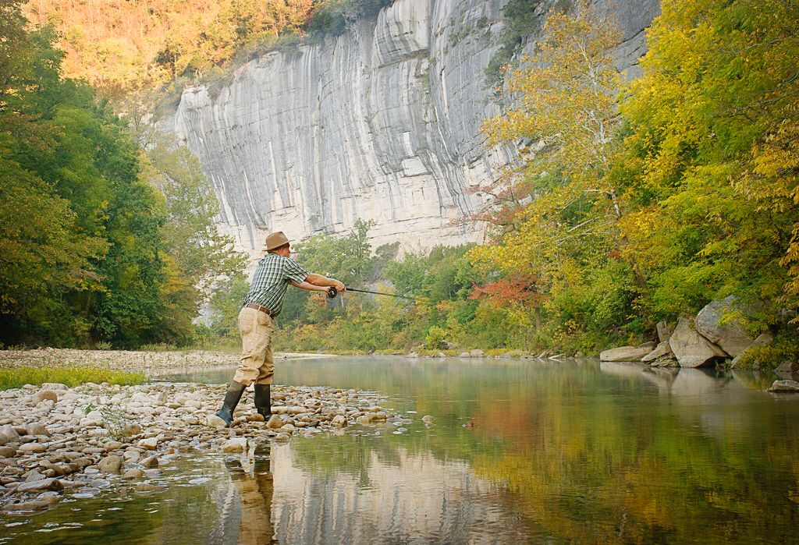
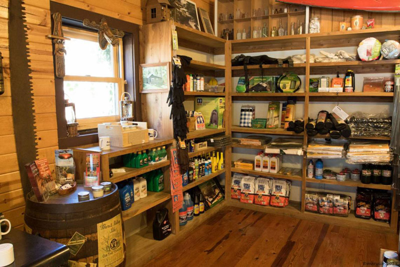
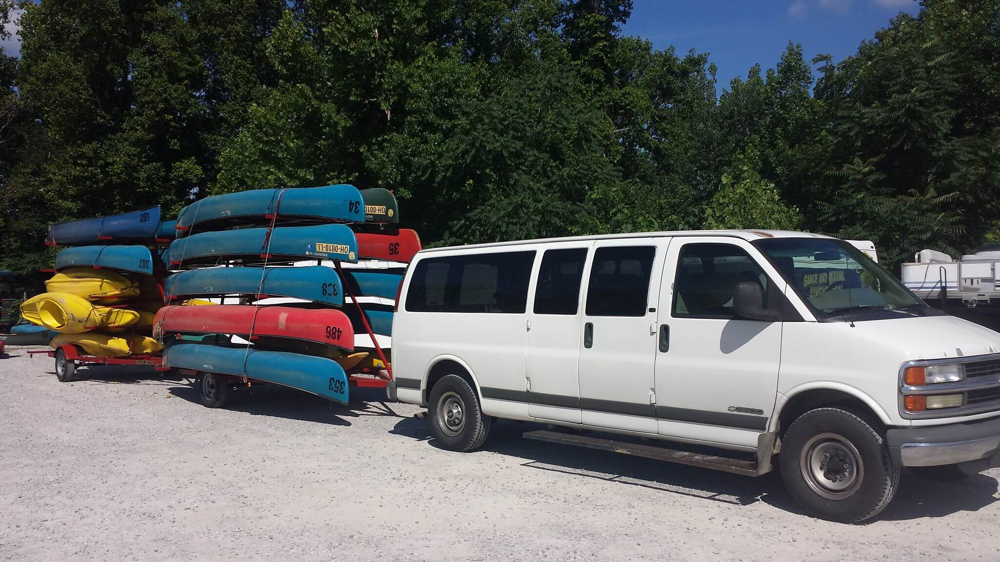
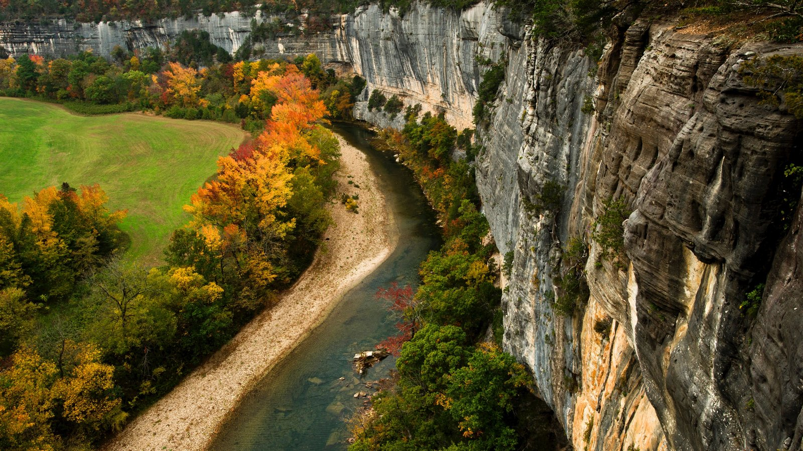

Plan your float with us. We will help you come up with an itinerary and get to where you need to be to optimize your fun on the Buffalo. We offer many services including shuttles, canoe and kayak rentals, fishing guides, guided tours and a convient store for all your floating needs.
 guides will provide everything you need to fish on The Buffalo. Our skilled fishermen can you help you learn the ropes so to speak if you have no experience or just need some advice on catching the indigenous fish
 Our Convenient store will provide the necessary supplies for your float or camping ventures here on the Buffalo wether its bug spray or bread WE GOT IT
 We can also provide full shuttle services no matter how long you plan on staying or floating. We do multi day floats as well with our new gps tracked canoe/kayak rentals which helps our staff pin point exactly what time you will be at the pick up point
 Our guided tours are fun for family or elderly groups since we have experienced adventurers that know the local flora and fauna that will show you the most beautiful aspects of The Buffalo River